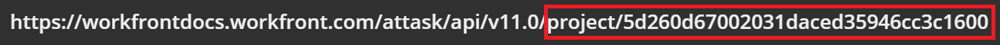

Examples of Workfront API Requests
Anatomy of a request
Requests are commands that access information from an API server. When a request is made, the system will return resources based on the various components that are specified in your request. Generally speaking, all of your Requests should consist of:
- URI: The Uniform Resource Identifier specifies the location of a particular Resource that can be called/accessed via Request.
- Endpoints An Endpoint is a descriptive name for a resource. In this case, the endpoint being accessed is the task, for the purposes of a creating a new task.
- Methods: The method specifies how a resource may be accessed (POST, GET, PUT, DELETE). In this case, the POST method is being used in reference to the task object. This method, along with the other parameters specified in the body of the URI, tell the server to create a new task. In this case, the new task will be called "new task" and it will be created under the project with the ID "5cf0415a009ec7f654918e8ae696aab9".
- Parameters: Parameters are options that are specific to an endpoint and corresponding method. There are four main types of parameters:
- Header Parameters: These are included in the request header and most often deal with authentication. Below, the session ID "3f9898132ec7436ba2196b9dfb9efd35" is being used to authenticate the request to create a task called "new task".
- Path Parameters: Path parameters are reserved for requesting information about a specific object and are separated from other parameters using a "/" in the URI. This request will return detailed information about a specific project with the ID "5d260d67002031daced35946cc3c1600".
- Query String Parameters: These parameters are used to specify information about an object or query and are first declared with the question mark symbol "?", then they separated from other parameters by the ampersand symbol "&".This request will create a task called "new task" inside the project with the ID "5cf0415a009ec7f654918e8ae696aab9".

- Body: The body includes information that is being sent to the server

Examples of Workfront API Requests
- This is an example of a URI for loging in to your Workfront instance. There is no endpoint because you aren't attempting to access a resource, but instead logging in.
- This is an example of a request to create a new project called "BANANA":
- This is an example of a request to update project "New Project" with a new name "Newer Project" (note that capitalization matters).
- This is an example of a request to create a new task called "NEW TASK"
https://Your Domain.workfront.com/attask/api/v11.0/login?username=ADMIN&password=PASSWORD&method=POST
https://Your Domain.workfront.com/attask/api/v11.0/project?name=New Project&sessionID=SESSION ID NUMBER&method=POST
https://Your Domain.workfront.com/attask/api/project?ID=PROJECT ID&name=Newer Project&sessionID=SESSION ID&method=PUT
https://Your Domain.workfront.com/attask/api/v11.0/task?name=New Task&projectID=PROJECT ID&sessionID=SESSION ID&method=POST